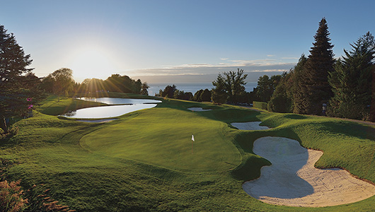
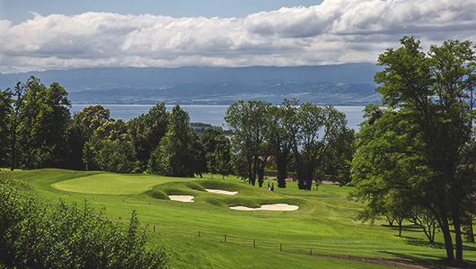
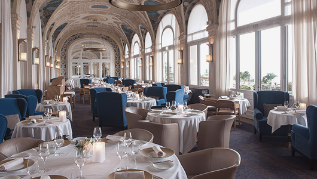

프랑스에서 가장 아름다운 코스
LPGA ‘The Evian Championship’ 개최지
1790부터 시작된 오랜 역사를 가진 ‘물을 통한 웰빙’으로 유명한 기업, 에비앙에서 운영 중인 명문 골프 리조트 스위스 국경과 닿아 있는 프랑스 남동부의 론 알프스 지역, 레만호 남쪽 기슭에 위치하여 18개의 홀을 따라 펼쳐지는 숨 막히게 아름다운 풍광이 ‘프랑스에서 가장 아름다운 골프 코스’라는 타이틀을 얻은 골프 클럽이다.

유럽 중심에서 열리는 유일한 메이저 대회인 LPGA 에비앙 챔피언십을 개최하는 곳으로, 2010년 신지애 선수를 시작으로 박인비, 김효주, 전인지 선수 등 한국 선수가 4번의 우승컵을 들어 올린 이 대회는 1994년 ‘에비앙 마스터스’라는 이름으로 첫 LPGA투어를 진행한 이후 2012년 메이저 대회 ‘에비앙 챔피언십‘으로 바뀌었다.

페어웨이가 좁은 산악형 코스로 장타보다 정확한 샷을 요구하는 것이 특징이며, 2013년에 진행된 레노베이션 과정에서 극적인 승부를 연출하기 위한 대대적 코스 변화를 시도하며 ‘에비앙 퍼즐‘이라 불리는 지금의 15~18번 홀이 탄생하였다. 유럽에서 펼쳐지는 유일한 메이저 대회인 에비앙 챔피언십 대회는 전 세계 7억 명 이상의 시청자들이 지켜보는 큰 대회이다. 특히 낙하산을 타고 내려와 우승자에게 우승자 나라의 국기를 씌어 주는 이벤트는 큰 호응을 얻고 있기도 하다.

유명 온천지역이기도 한 에비앙 르뱅에 지어진 5성급 에비앙 리조트는 19헥타르의 녹지에 지어진 최고급 호텔과 카지노, 미식, 스파, 대규모의 공원 등 인프라가 잘 갖추어져 있어, 전 세계 골퍼들에게 평화로운 천국이라는 찬사를 받으며 이목을 집중시키고 있다.
Travel Tip
야스 섬은 레저 섬으로 알려져 있으며 야스링크스 코스 옆으로는 페라리 월드(Ferrari World)와 2009년부터 “F1 아부다비 그랑프리”가 열리는 마리나 트랙이 있고, 다섯 개의 호텔이 군락을 이룬 첨단 레저의 지역이다. 야스링크스 골프 클럽의 부대 시설로는 파3 9홀 아카데미 코스가 있고, 스페인풍의 3층 클럽하우스 뒤로는 풀장이 있어 유럽의 많은 골퍼가 즐겨 찾는 곳이다.